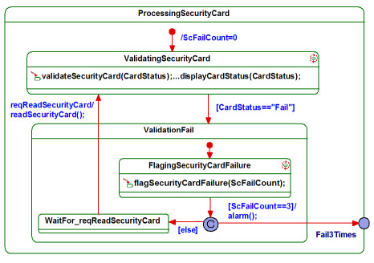
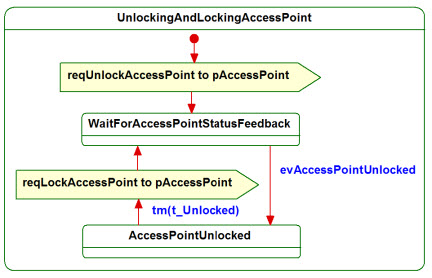

| Guideline: Deriving Statechart Diagrams |
 |
|
| Related Elements |
|---|
IntroductionThis guideline describes, by way of an example, how to derive statechart diagrams from a consistent set of activity and sequence diagrams. The example is a security system used to grant exit from a facility to authorized users that swipe a valid security card. The users get three attempts at swiping the card and if the card is not validated by the third attempt exit is denied. The following input information is available:
Each of these diagrams also have associated pre- and post-conditions. Figure 1: Use-Case Black-Box Activity Diagram for Uc2 ControlExit Note: Actions stereotyped <<MessageAction>> contain only message(s) to and/or from actors. Figure 2a: Nominal Flow of Uc2_Sc1 ControlExit Figure 2b: Exception Flow of Uc2_Sc2 ControlExit To derive a statechart diagram:Step 1: Identify wait states and action states1.1 Identify Wait StatesIn a wait state an object waits for an event to happen i.e. it just consumes time. From the use-case black-box activity diagram (Figure 1), identify actions with IN actor pins. From the use-case black-box sequence diagrams (Figure 2a and Figure 2b), identify the messages (receptions) that trigger the selected actions. For each of the identified actions, create a wait state in the statechart diagram named WaitFor<ReceptionName>. In cases where the use-case black-box sequence diagram shows a timeout event (t_Unlocked in Figure 2a), create a wait state in the statechart diagram with a name that describes the actual system status. The results are shown in Figure 3a, below. Figure 3a: Wait States of Uc2 ControlExit
|
3.1 Identify State HierarchiesOnce the flat statechart is verified, look for ways to simplify it by structuring it hierarchically. Identify states that can be aggregated. Grouping criteria could be the following:
Also look for situations where the aggregation of state transitions simplifies the statechart. Inspection of the flat statechart in Figure 4 reveals that the following 3 states can be considered sub-states of a composite state called ProcessingSecurityCard:
This is depicted in Figure 5b. As ScFailCount is a local attribute, the initialization is added to the default entry of the composite state. Furthermore, the sub-states FlagingSecurityCardFailure and WaitFor_req_ReadSecurityCard can be aggregated in the composite state ValidationFail, thus denoting the fail mode within the ProcessingSecurityCard state.
Note the different descriptions of the transitions out of the composite state. In the case of
CardStatus=="Pass" the triggering condition and associated action is captured in the top-level
statechart (Figure 5a) as a high-level interrupt. In the case of a third-time failure the respective
triggering condition and associated action are captured within the ProcessingSecurityCard
state and linked to the top-level statechart via an Exit Point (Fail3Times). Figure 5a shows the final hierarchical statechart of the use case Uc2 ControlExit. 3.2 Execute the StatechartVerify the correctness of the captured state-based behavior through model execution using the black-box use case scenarios as the basis for respective stimuli.
|
Figure 5a: Hierarchical Statechart of Uc2 ControlExit  Figure 5b: Composite ProcessingCardData  Figure 5c: Composite State UnlockingAndLockingAccessPoint |
Licensed Materials - Property of IBM |